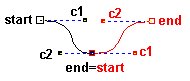
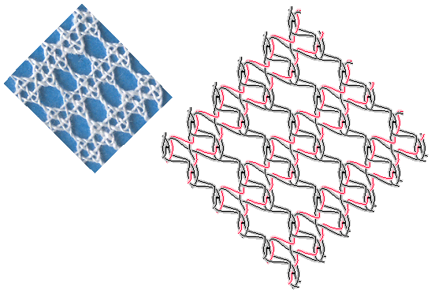
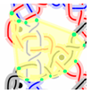
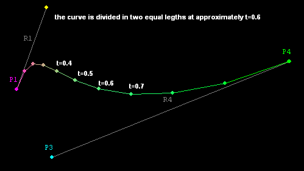
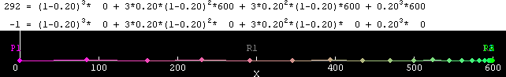
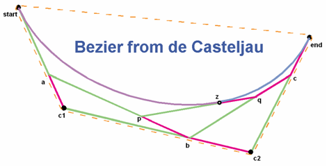

table of content
Foundation
Small connected sections of Bezier curves are the foundation of the working diagrams.
Each cross or twist consist of one section in the background and one section in the foreground. A "shadow" for these sections creates the under/over effect. A white "shadow" creates the traditional drawings.
 
The following code snippet shows how to define the Bezier curves of a half stitch. Note that the "." is for the decimals and the "," separates X from Y. X being the horizontal distance from the left side of the canvas, and Y the vertical distance from the top side of the canvas, so 0,0 is the top left corner.
<stitch id="tc" pairs="15-16">
<pair start="3,13.3" end="13.5,3" />
<pair start="3,3" end="13.5,13.5" />
<twist bobbins="1-2">
<back start="0,6.6" end="5,11.6" />
<front start="5,2" c1="5,5" c2="5,5" end="0,10" />
</twist>
<twist bobbins="3-4">
<back start="11.6,2" c1="11.6,5" c2="11.6,5" end="16.6,10" />
<front start="16.6,6.6" end="11.6,11.6" />
</twist>
<cross bobbins="2-3">
<back start="11.6,11.6" end="6.6,16.6" />
<front start="5,11.6" end="10,16.3" />
</cross>
</stitch>
Ends
This is how the half stitch looks like:
Unlike traditional diagrams, no ends come out of the stitch going to the bobbins. That is a technical work-around for better chaining the stitches together. Saying that, an idea is coming up how to improve it: the program should extend the loose ends for a while. This is rather a programming challenge than a mathematical challenge, though it might be tricky in what direction to extend.
Gaps
Let us combine a predefined half stitch with predefined twists:

On the left the result without any intelligence in the program. On the right the program knows how to make the ends meet. But just making the ends meet is not sufficient. The "shadow" still shows a gap. As shown in the picture at the very top of this page, c2, end, start and c1 should be on a straight line. That is a smaller challenge than extending the ends discussed above. But it adds to the tension challenge discussed below.
Tension
In this example of a striped Vierge ground, the drunken coloured lines show that the program doesn't know how to tension the threads.

So the program has to do more than just make the ends meet. But simply stretching a drunken line into a more straight line is not enough. We have some obvious restrictions by the pins, but also the connection points and intersections should not move too close. This is a real challenge for which I could use assistance of specialists in Bezier mathematics.
Highlights
Threads
Selecting threads has an obvious bug. The current strategy is drizzling into the details of the tree until the cross or twist is found that contains the mouse pointer. Then nearest thread is highlighted. The following issue show why some sections at the edge sometimes can't be selected.
Groups of stitches

In the Image above, the green dots show the end points of the selected group of stitches. These points define the shape for the highlights. That is a quick and dirty solution. It usually works when just drawing grounds. But the red curve at the left of this highlight should also be included. This is not even the worst example. So here has to change something too.
Twist marks
Additional twists in a pair diagram are marked with short perpendicular lines approximately through the centre of a pair segment. t=0.5 only divides a curve in two halves of equal length if the curve is symmetrical. The following 2 figures inspired the approximation of t as calculated in createTwistMark.
Inspiration for the basic calculation: the ratio of the distances of the end points to both control points. Just R1/(R1+R4) is too simple as thus the direction would play no role.

Inspiration for the correction

both from ablestable follow the link to Understanding Bezier Curves
The following diagram illustrates the variables used in further calculations.
